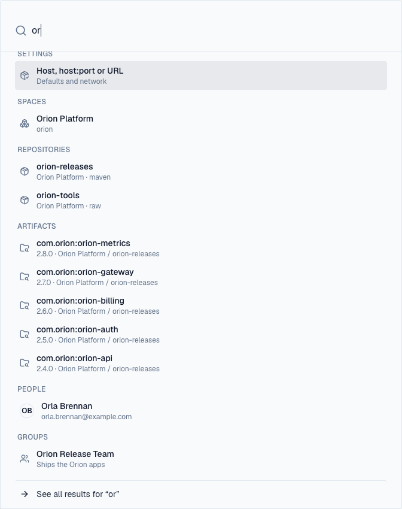
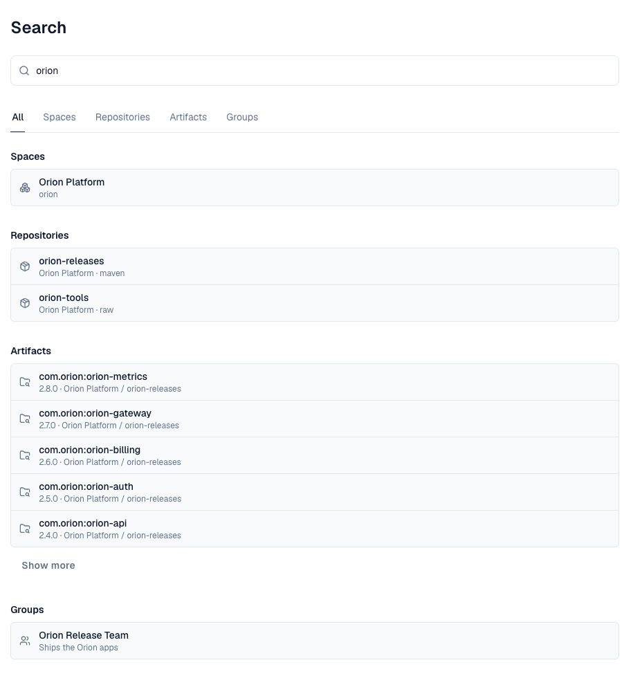
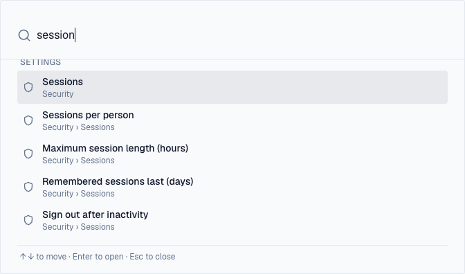

1. Overview
The search box at the top of every page finds what you can open across Depotex: spaces, repositories and artifacts, and for administrators settings, people and groups. Open it by clicking the box, with Ctrl+K (⌘K on a Mac), or with / when you aren't typing in a field. On a phone, tap the search button in the header; the search fills the screen. It is part of every licence tier.

Results appear as you type, grouped by kind, with the first one highlighted. Each says where it is (a repository's space and format, an artifact's version, space and repository, a person's email) and its state when that matters: a quarantined, blocked or incomplete artifact, a proxy or group repository, a disabled, invited or locked account.
2. All results
The box shows the first five results of each kind. See all results at the bottom (or Enter on it) opens the Search page: all kinds side by side under All, each with Show more when there are more, and a tab per kind that found something. A kind's tab lists its results 20 at a time with Load more; Artifacts also links to Browse with the same words, for its filters and sorting. The address holds the words and the tab (/search?q=orion&kind=artifacts), so a search can be bookmarked or shared; others see only what they may open.

3. What it finds
Only what you could open yourself is found, under the same rules as the rest of Depotex: a space or repository you have no access to never appears, even by name.
| Kind | Matches | Who sees it |
|---|---|---|
| Spaces | Name and key | The spaces the Spaces list shows you: yours, internal ones of your organization, public ones |
| Repositories | Name and format (npm, maven…) | Repositories you can open, through your space roles, a role on the repository or a content selector |
| Artifacts | As Browse search: package name, version and file names; each package once, at its newest version, best match first | Versions you can browse, down to the folders a content selector gives you |
| Settings | A setting's label, the tab or section it sits in, and its page | People who can open Settings, for the pages and tabs their role reaches |
| People | Name, username and email | Administrators with users:read and profiles:view |
| Groups | Name | Administrators with groups:read |
While anonymous access is on, visitors who aren't signed in find public spaces and what they hold.
4. Finding a setting
People who can open Settings also find what's in it: a single setting such as Sign out after inactivity, a tab such as Sessions, a whole page, or a page or section a plugin adds. Settings come first and appear as you type. Each says where it is (Security › Sessions). Only settings you could change are listed: a tab your role doesn't see, or a page of a feature your licence doesn't include, isn't found.

Opening one goes to its page and tab, scrolls to the setting and outlines it for a moment.
A few settings are found by their page only, not one by one: email delivery, backups, and the rate-limit budgets other than failed sign-ins.
5. How matching works
Each word you type must start a word of the result: orion rel finds orion-releases, and so does rel, but leases doesn't. Dots, dashes, underscores and @ separate words, so jane finds jane.smith@example.com. Type at least two letters or digits. Case and order don't matter.
6. Using the keyboard
- ↑ and ↓ move through the results, Enter opens the highlighted one, Esc closes the search.
- With the box empty, your last five searches are offered. They are kept in this browser only; Clear forgets them.
- On pages with their own search field (Browse), / goes to that field; Ctrl+K always opens this search.
7. Limits
Search runs as you type, so it is built to stay light on the server:
- Each person can search 120 times a minute, in bursts of up to 30. Typing sends one search per pause and drops the one before, which stays far below that. Past it, the search asks you to wait.
- Each server runs at most 8 searches at once; past that it answers that search is busy, and the box says to try again in a moment.
- Each kind of result has a second to answer. One that doesn't is left out, and the box says some results couldn't be loaded.
- The box shows the first 5 results of each kind; the Search page pages through the rest.
- Settings are found in your browser, from a list loaded the first time you search: they cost the server nothing.
8. Searching through the API
GET /api/search takes the same words in q and answers with the kinds your token's permissions allow (any API token; it never finds more than its owner could). Add kind (spaces, repositories, artifacts, users or groups) for one kind, 20 a page, and pass each group's next back as cursor for the next page; limit goes up to 50.
curl -H "Authorization: Bearer $DEPOTEX_TOKEN" "https://depotex.example.com/api/search?q=orion+rel&kind=repositories"| Reason | Meaning |
|---|---|
| search_too_short / search_too_long | q has fewer than 2 letters or digits, or more than 200 characters |
| invalid_kind, invalid_limit, cursor_needs_kind, invalid_cursor | An unknown kind, a limit outside 1–50, a cursor without kind, or a cursor that isn't one Depotex gave |
| search_busy (503) | The server is running as many searches as it allows; retry after the Retry-After header |
| 429 rate_limited | Your search budget is spent for now; retry after Retry-After |
A kind whose results didn't arrive in time is listed in unavailable in the answer; the other kinds are complete.